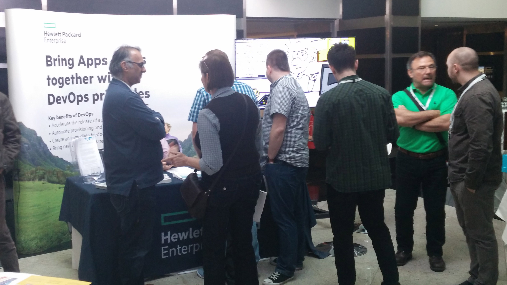
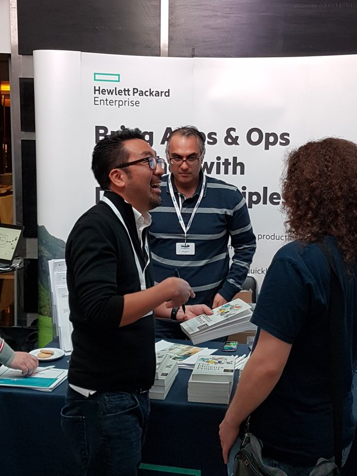

AlexFarren.co.uk
Technical Thoughts..
Musings of a technophile
DevOps Days - London 2016

On the 19th-20th April 2016 I was lucky enough to attend the DevOps Days conference in London, representing Hewlett Packard Enterprise.
DevOps, as a culture, is becoming far more widespread. At this event, there were far more corporate bodies in attendance than in previous years. More and more companies are hearing of this movement and want to buy DevOps in an Out-Of-The-Box solution. To counter this, the conference reiterated over and over that DevOps is a culture. Indeed there are many tools available that have been created to help facilitate this culture, but they need to be used correctly to be effective.
DevOps - A Cultural and Professional Movement
The event was attended by many companies including HPE, Microsoft, Google, Chef, Docker, Puppet. Some of these companies were giving talks, whilst others had stands where they would tell you about their new and existing products, as well as giving you a free T-Shirt..
There are a couple of concepts that I took away from this event:
Team Structure
Microsoft and Google both had a talk on Multi-disciplinary teams. The idea behind this is that instead of having pools of Developers, Operations guys and Testers, where these resources would be assigned to projects but work within their pools, you would instead have feature teams. These teams comprise of Devs, Ops & Test guys (or whatever resources you usually combine, Wintel, DB engineer etc) working in the same team. Projects are then assigned to that team, and worked on by all members of the team. Teams work on multiple projects to avoid idle time. This works well with the concept of Microservices, where large applications are broken down into smaller services that join together to create the larger application.
Ideally these feature teams would be working in the same room. With IT distributed the way it is, with Best-Shore resources forming a large part of Enterprise workforces, channel based chat tools such as Slack or HipChat can be useful for getting teams to work well together.
Containerisation
Over the past 5 years Docker has become more and more popular. For the few that don't know, Docker is an implementation of containerisation. Containers work predominantly on Linux and Unix platforms, and are a smaller and more agile alternative to virtualisation. In a VM you have an entire virtual OS running ontop of the Host OS. With Containers, you only have a new instance of the system files, which link into the same Kernel as the host. This allows the user to create small, separate machines ontop of the host that are completely isolated very quickly.
DCOS is using Apache Mesos to schedule many containers on a large host, completely removing the virtualisation layer and getting peak performance out of the hardware, while still retaining isolated environments for development.
Another reason why containers are popular, is sharing and reuse. You can share a Docker image you have created yourself which when ran by another user, will present them with the exact environment you had been using, reducing the it works on my machine complaint. You can also share a DockerFile, which contains instructions that are applied to a common base image (such as Ubuntu). When the end user runs this, Docker uses the base image and applies the configuration instructions to setup the image to the desired state.
Minimal Viable Product
Traditionally if you are building a car, you build the chassis, then add the engine, then put on the bodywork and you end up with a car. The problem with this is method is until the last step, you cannot use what you’ve made so far.
If you are working to a Minimal Viable Product you might first create a skateboard; it has wheels which you can reuse and a base. Then you might make a bike, then a motorbike and finally a car. A skateboard definitely isn’t what you wanted, but it has reusable parts and it’s a mode of transport that you can use to some extent while working toward the final product.
Quotes
There were many quotes flying around over the event, these are my favourites
you have to change, if you don't, you'll die - Joanne Molesky
People ask for things they don't use. Turn things off and see if people complain - unknown
Don't let experience be your blind spot - John Clapham
Links
DevOps Days Programme - This is the full lineup of the talks, clicking the links on this page links you to most of the presentations
DevOps Days Video Replays - A lot of the videos were recorded and have been uploaded here
The Phoenix Project - Gene Kim was signing copies of this book at the HPE stand, if you haven't read it, its probably the place to start
